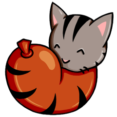

Bio

Sausage Cat
| Species: | Cat...? |
|---|---|
| Birthday: | Jun 1 |
| Weight: | 3.6kg |
| Traits: | Playful |
Meet Sausage Cat. Due to it's unique disposition, Sausage Cat is lacking in it's ability to...well...cat. It possesss no climbing ability and poor balance and as a result frequently falls. Thankfully like all cats, it's fall resistant. Sausage Cat can be clingy and a bit of an attention whore and will happily dominate your workspace. Tha being said, it is still a cat, so expect it to stare at you blankly and ignore you when it sees fit.